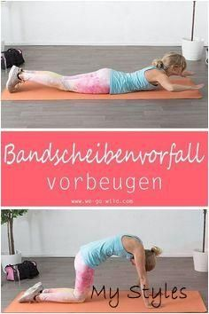

Cardio Training zu Hause - Die besten Tipps und Übungen
- 6 Cardio Übungen für zu Hause - Gymondo
- Ausdauertraining für Zuhause: 20 Übungen ohne Geräte
01.05.2020 — - 20 Cardio übungen-Ideen | fitness workouts, fitnessübungen .
- Für diese 5 Cardio-Übungen brauchst du kein Zubehör
- Cardio Training: Vorteile, Methoden und Herzfrequenz
- Abnehmen: Diese 5 Cardio-Übungen verbrennen noch mehr .
- Probiere die 5 besten Cardio-Übungen im Fitnessstudio aus .
- 10 Übungen für das perfekte Cardio Training zuhause
- Cardio-Training zu Hause - Uebungen.ws
- Besser als Laufen: 5 Cardio-Übungen, um mehr Kalorien zu .

- Anzeige -
Skip to content @ FITNESS ▼ Ausdauer Kraft Bauch Beine Po Yoga & Stretching Equipment Tipps FOOD ▼ Ernährungstipps Veggie Vegan Low Carb Fisch & Fleisch LOVE ▼ Beziehung Lust & Leidenschaft LIFE ▼ Gesundheit Beauty & Mode Abnehmen Do it yourself Haushalt & Garten Horoskop & Co Sprüche DEALS Über uns Kontakt Home Impressum Datenschutz Cookie-EinstellungenSchon gewusst? Du bist super! ❤
⚲ FITNESS > AusdauerSo gelingt Cardio Training zu Hause ohne Geräte
Dieser Beitrag enthält Werbung und / oder bezahlte Werbelinks.
von Lydia Kulterer Aktualisiert am 7. Januar 2019 21. April 2021 @So einfach kannst du dein Cardio Training zu Hause absolvieren. Ohne Geräte! Die besten Tipps und Übungen zum Ausdauer trainieren!
Ausdauertraining jetzt im Winter? Laufen gehen oder wie? Nee. Brauchst du nicht. Es gibt viele Möglichkeiten Cardio Training zu Hause zu machen. Auch ohne Laufband.
Also Schluss mit den Ausreden :) Runter vom Sofa und rein in die Sportleggings.
Fürs Ausdauer trainieren musst du also nicht mal deine eigenen vier Wände verlassen. Klingt wunderbar oder?
Du erfährst in diesem Beitrag
Die besten Übungen fürs Cardio Training zu Hause Ob du Cardio Training zu Hause im Zirkel oder Intervall absolvieren solltest Die besten Fitnessgeräte fürs Ausdauertraining zu Hause Warum Cardio Training zu Hause so toll istDer große Vorteil beim Cardio Training zuhause ist, dass du dabei auf Übungen setzt, die nicht nur deine Ausdauer stärken. Sie bauen auch Muskeln auf.
Kurz gesagt: Sehr anstrengend aber gleichzeitig auch sehr effektiv. Mehr nützliche Informationen rund ums Ausdauertraining im Wohnzimmer gibt es unter den Übungen.
Für den Anfänger ist Cardio Training ohne Equipment perfekt. Wenn du dann aber Schritt für Schritt besser wirst, wirst du bald merken, dass es dich nicht mehr herausfordert und dir zu wenig Schwung gibt.
Spätestens dann, ist es Zeit das Ausdauer-Workout auf eine neue Stufe zu heben. Wenn du dafür die Wohnung trotzdem nicht verlassen möchtest, dann kann sich die Anschaffung eines Heimtrainers wirklich lohnen.
Am platzsparendsten und sehr vielseitig einsetzbar ist ein Heimtrainer Fahrrad wie das Miweba Cycle MS400 .
Diese Geräte sind deshalb so optimal, weil du dabei die Wahl aus verschiedenen Schwierigkeitsstufen hast. Bei diesem Heimtrainer sind es 24unterschiedliche Stufen. Außerdem schonst du beim Radeln die Gelenke und Knie. Wir hatten selbst kürzlich ein Fitness Bike im Einsatz und einen eigenen Beitrag darüber geschrieben.
Lohnt sich ein F-Bike wirklich?
Viel Abwechslung sorgt für mehr Durchhaltevermögen
Wer nicht mehr so schnell aus der Puste kommen möchte, der sollte sein Ausdauertraining umfangreich gestalten. Das heißt: Nicht nur laufen gehen.
Schwimmen, Radfahren, Tanzen und absoluter Geheimtipp: Springseil hüpfen. Das alles verbessert deine Ausdauer.
Je mehr unterschiedliche Dinge du probierst, desto langsame wirst du dich langweilen. Das führt dazu, dass du länger durchhältst.
Ausdauer und Kraft verbesserst du gleichzeitig, wenn du regelmäßig zum Springseil greifst. Je öfter du das Seil schwingst, desto einfacher wird’s. Am besten startest du auf weichem Untergrund. Dann tut der Sturz nicht so weh :)
Außerdem gilt: Je hochwertiger das Springseil, desto leichter werden dir die Schwünge fallen. Mein Lieblings-Springseil habe ich bei ProSpeedrope gefunden . Du kannst hier aus unterschiedlichen Schwierigkeitsstufen und Gewichten wählen. Anfänger sollten unbedingt “Easy” nehmen dieses Modell hat gerade mal 210 Gramm und liegt sehr gut in den Händen.
Außerdem steckt in allen 11 Modellen ein ausgeklügeltes Kugellager, das besonders schnelle Schwünge zulässt.
Video-Empfehlung
Die Seile werden alle mit Handarbeit in Deutschland hergestellt. Schau dich mal auf der ProSpeedrope Website um , du findest hier auch jede Menge Informationen übers Seilspringen, die sehr wissenswert sind.
Die besten Übungen fürs Cardio Training zu Hause
Aber wie viele Wiederholungen sind nun nötig, damit das Ausdauertraining zuhause wirklich was bringt? Das liegt ganz an deiner Fitness.
Tipps und ob du eher der Zirkeltraining oder Intervalltraining Typ bist, findest du unter den Übungen.
Hampelmann
Der absolute Klassiker unter den Cardio Übungen ist der Hampelmann. Er ist sehr gut um mit dem Workout zu starten, weil du dabei auch jede Menge Muskeln aktivierst und aufwärmst.
Du beginnst im aufrechten Stand. Die Hände liegen parallel zum Körper. Hüpfe in die Luft und schlage die Hände über dem Kopf zusammen. Gleichzeitig spreizt du deine Beine. Und gleich wieder zurück in Ausgangsposition.
Schon hast du die erste Aufwärmübung für dein Cardio Training zu Hause absolviert.
Wärme dich mit diesen 15 Übungen auf!
High Knees
Bei dieser Ausdauerübung kombinierst du eine typische Laufbewegung und hohe Kniebewegungen.
Fange an auf der Stelle zu laufen. Mache schnelle Schritte. Ziehe die Knie bis auf Höhe der Hüfte oder höher.
Diese Übung fürs Cardio Training zu Hause treibt deine Herzfrequenz sehr schnell nach oben.
Übrigens: Von dieser Übung profitieren auch deine Po Muskeln :)
16 Po Übungen, die dein Leben verändern werden!
Squat und Sprung
Mega anstrengend und mega effektiv. Der perfekte Mix für Po, Beine und Ausdauer in nur einer Übung.
Du startest mit einer Kniebeuge. Drücke dafür deinen Po nach hinten und unten. Nicht die Knie nach vorne schieben, sondern den Po nach hinten unten. Ist dein Po auf Höhe der Knie, machst du einen Sprung in die Luft. Strecke einen gesamten Körper dabei richtig fest durch. Wenn du auf der Matte landest, gehst du sofort wieder in die Hocke.
Luft boxen
Ich liebe Luft boxen und baue es in jedes Cardio Training zu Hause ein. Dabei kannst du deinen ganzen Ärger einfach wegboxen. Tut super gut! :)
Stelle dich aufrecht hin. Brust raus, Bauch rein. Spanne die Mitte fest an und laufe mit kleinen schnellen Schritten auf der Stelle. Hebe die Arme auf Schulterhöhe. Und mache abwechselnd mit der rechten und linken Hand Boxschläge nach vorne.
Nicht aufs Laufen vergessen während du boxt!
Für Fortgeschrittene:
Nimm leichte Hanteln in die Hände. Aber Achtung: Besonders gut festhalten!
Burpees
Du liebst sie oder hasst sie dazwischen gibt’s keine Meinungen. Am Anfang wirst du sie wahrscheinlich eher hassen. Sie sind nämlich wirklich furchtbar anstrengend. Aber hast du den Dreh mal raus, sind Burpees eine tolle Ausdauer Übung.
Stelle dich aufrecht hin. Beginne mit einer Kniebeuge und gehe in die Hocke über. Setze die Hände am Boden ab. Gehe schnell in die Liegestützpositon über. Dafür streckst du deine Beine in einer Kick Bewegung nach hinten. Mache einen Liegestütz. Ziehe die Beine wieder heran. Und mach einen Strecksprung.
Übrigens: Burpees dürfen in keinem High Intensity Intervall Training fehlen!
▶ Tipp! Mit richtig coolen Leggings macht das Workout gleich viel mehr Spaß. Motiviere dich mit unseren Favourites: Lascana Adidas Lascana Reebok Werbelinks mit Provision22 effektive HIIT Übungen
Ausfallschritte mit Knieheben
Sieht mega einfach aus, ist aber sehr anstrengend. Eine tolle Übung mit der du gleichzeitig deine Balance und die Beine stärkst.
Beginne im aufrechten Stand. Mache mit dem rechten Bein einen Schritt zurück. Beuge das Bein bis du mit dem Knie fast den Boden berührst. Das vordere Bein bildet einen rechten Winkel. Richte dich wieder auf und ziehe das rechte Knie in Richtung Brust. Ohne dich dabei mit dem Oberkörper nach vorne zu neigen.
Mountain Climber
Der Mountain Climber darf bei keiner Cardio Einheit fehlen. Eine sehr anstrengende Übung, die auch beinen Po, die Beine und die Arme stärkt. Ein Allrounder quasi mit Muskelkater Garantie.
Du beginnst in der Liegestützposition. Die Arme sind gestreckt. Die Hände liegen unter den Schultern. Nun beginnst du abwechselnd das rechte und linke Bein zur Brust zu ziehen. Achte darauf, dass der Rücken gerade bleibt. Und dass du den Bauch anspannst.
Seilspringen
Ein absoluter Geheimtipp ist das Springseil. Es ist sehr günstig und findet selbst in der kleinsten Wohnung einen Platz.
Die Springschnur kann selbst sehr geübte Sportler innerhalb weniger Minuten enorm ins Schwitzen bringen.
Beim normalen Seilspringen (Easy Jump) ist es wichtig, dass du nicht höher springst als nötig. Das Seil soll bei jedem Durchschlag Bodenkontakt haben. Dein Oberkörper ist aufrecht und die Oberarme liegen eng am Körper an. Die Knie sind leicht gebeugt.
Ob du Cardio Training zu Hause im Zirkel oder Intervall absolvieren solltest
Es gibt jede Menge Übungen für dein Cardio Training zu Hause. Sehr viele davon werden zum HIIT Training gezählt. Also High Intensity Intervall Training. Das bringt deinen Puls und die Fettverbrennung ordentlich in Fahrt.
Abnehmen mit High Intensity Interval Training
Immer schön wild bleiben.
Mit unserem kostenlosen Newsletter!Jetzt abonnieren
Cardio Training zu Hause kannst du als Zirkeltraining oder als Intervalltraining durchführen.
Ob du dich nun für Zirkel oder Intervall entscheidest: Damit du beim Cardio Training schnell den Fettstoffwechsel ankurbeln kannst, solltest du dir nur wenige Pausen gönnen. Die Übungen werden rasch ausgeführt.
Cardio Training zu Hause als Zirkel
Zirkeltraining können wir alle noch aus der Schule. Es hat einen etwas verstaubten Ruf. Dabei ist es mega effektiv!
Du machst verschiedene Übungen immer für eine bestimmte Zeit. Danach wechselst du zur nächsten Übung. Und beginnst dann wieder von vorne.
Oder anders gesagt: Eine Übung wird 30 Sekunden bis 1 Minute mit maximaler Intensität durchgeführt. Danach kommt die nächste Übung.
Ist der Zirkel an Übungen durch, beginnst du wieder von vorne. Anfänger schaffen 2, Fortgeschrittene 3 oder mehr Zirkel.
Beispiel: Dein Ausdauertrainig besteht aus Hampelmann, Springseil hüpfen und Squats mit Sprung.
Beim Zirkeltraining machst du 30 Sekunden Hampelmann, 30 Sekunden Springseil und 30 Sekunden Squats mit Sprung. Jetzt folgen 30 Sekunden Pause. Danach beginnst du mit einem zweiten und dritten Zirkel.
Cardio Training zu Hause als Intervalltraining
In 30 Sekunden bis einer Minute machst du so viele Wiederholungen wie möglich. Es folgt eine kurze Pause.
Und danach beginnst du mit dem zweiten Satz. Erst wenn du zwei bis drei Sätze von der Übung durch hast, beginnst du mit der nächsten Übung.
Beispiel: Dein Ausdauertraining besteht aus Hampelmann, Springseil hüpfen und Squats mit Sprung.
Beim Intervalltraining machst du 30 Sekunden Hampelmann zu 3 Sätzen, 30 Sekunden Seilspringen zu 3 Sätzen und 30 Sekunden Squats mit Sprung zu 3 Sätzen.
Man spricht auch von HIIT Training. Also High Intensity Intervall Training. Es bringt dich mega ins Schwitzen und stärkt dabei deine Ausdauer.
Die besten Fitnessgeräte fürs Ausdauertraining zu Hause
Beim Ausdauertraining im Wohnzimmer hast du verschiedene Möglichkeiten. Wird dir HIIT zu langweilig dann kannst du mit Geräten nachhelfen.
Geräte und Equipment rentieren sich, wenn du regelmäßig und konsequent trainierst.
1. Das Springseil
Das günstigste Equipment für dein Ausdauertraining ist das Springseil. Seilspringen ist mega effektiv und lässt die Kilos purzeln.
10 Minuten intensives Springen soll so effektiv sein wie eine halbe Stunde lang joggen.
19 effektive Übungen mit Springseil
2. Der Crosstrainer
Zu den bekanntesten Geräten zählt der Crosstrainer. Er ist vor allem bei Sportanfängern sehr beliebt, weil er die Gelenke schont. Das ist ein großer Vorteil wenn du anfangen möchtest abzunehmen und gerade Übergewicht hast.
Neben den Beinen und dem Po stärkst du damit auch deine Arme.
3. Das Laufband
Läufer, die auch im Winter ihre Runden ziehen möchten, die müssen sich nicht bei Sturm und Schnee rauswagen.
Mit einem Laufband kannst du bei jedem Wetter joggen gehen. Du kannst die Geschwindigkeit selbst einstellen und bist so vollkommen flexibel.
4. Das Rudergerät
Mit einem Rudergerät stärkst du deine Ausdauer. Aber auch deine Muskeln profitieren davon. Auch hier kannst du die Stärke selbst einstellen.
Je schwerer sich das Ruder ziehen lässt, desto besser ist das für deine Muskeln. Vom Rudergerät profitiert vor allem deine Armmuskulatur.
Warum Cardio Training zu Hause so toll ist
Ausdauertrainig ist sehr gesund für unseren Körper. Und das nicht nur deshalb, weil wir beim Treppensteigen nicht so schnell außer Atem kommen. Sondern auch weil Cardio Einheiten unser Herz Kreislaufsystem stärken.
Wer seine Ausdauer trainiert, sorgt auch dafür, dass Stress besser abgebaut wird. Gleichzeitig werden Glückshormone freigesetzt und überfluten unseren Körper. Und das ist vor allem in den dunklen Wintermonaten wichtig.
Allerdings machen gerade hier die meisten den Fehler vollkommen aufs Workout zu verzichten. Dabei ist es so einfach in Form zu bleiben, wenn man auf Cardio Training zu Hause setzt.
Kurz gesagt: Cardio Training macht uns fit und glücklich.
Aber auch wenn du abnehmen möchtest, kannst du vom Cardio Workout profitieren. Pro Workout treibst du deinen Puls nämlich ordentlich nach oben. Die maximale Herzfrequenz erreicht 60 bis 80 Prozent.
Um durchhalten zu können, braucht dein Körper jede Menge Energie und Kraft. Während du schwitzt, baust du also ganz viele Kalorien ab. Und das führt dann dazu, dass der Körper auf seine Fettreserven zurückgreift.
Beim Training zuhause schonst du übrigens auch deine Geldbörse. Statt sinnlose Mitgliedsbeiträge im Fitnessstudio zu zahlen, kannst du dir damit neue Sportklamotten oder einen Mädels Wellness Urlaub gönnen :)
Wer einen sehr stressigen Alltag hat, profitiert auch von der vollkommenen Flexibilität. Trainingsmatte auspacken und schon kannst du loslegen. Du musst nicht noch extra irgendwohin fahren. Wie du siehst: Cardio Training zu Hause lässt selbst diene beste Sport Ausrede vergehen.
Unser Fazit
Wenn du dein Cardio Training zu hause absolvieren möchtest, brauchst du dafür keine Hilfsmittel. Eine einfache Trainingsmatte genügt fürs Ausdauertraining im Wohnzimmer. Viel Spaß beim Workout!
Zum Weiterstöbern:
Seilspringen macht auch ohne Seil fit! Das sind die besten Aufwärmübungen vor dem Laufen Das hilft sofort gegen Hüftschmerzen beim Laufen Made with ❤ by WEBPUNKSStay fit. Eat smart. Love life.
WE GO WILD ist alles was Power-Frauen wirklich brauchen. Wir verbreiten den „fit & happy“-Lifestyle mit den besten Tipps fürs Training zu Hause, gesunden & leckeren Rezepten und verpassen deinem Leben einen bunten Anstrich. Immer schön wild bleiben!
Infos & Service
Kontakt
Über uns
Kooperationen
AGB
Impressum
Datenschutz
Cookie-Einstellungen
